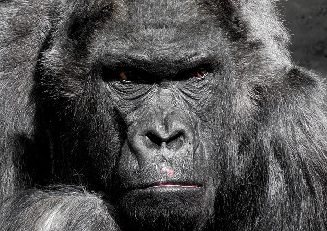
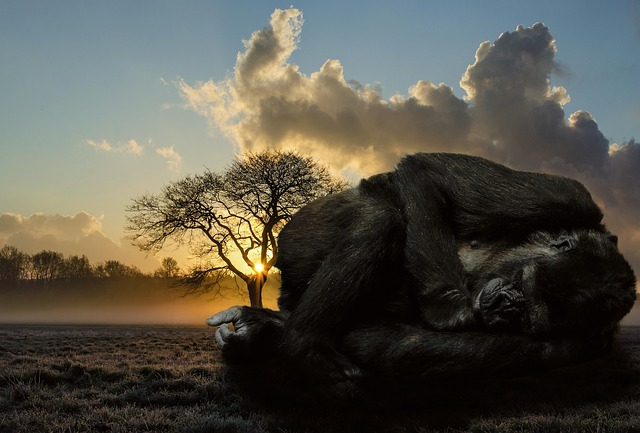

Chapter 2
Kerchak, a hulking male gorilla and the leader of the ape tribe that harassed the Claytons for the past year, is in a mad rage. He lashes out at his fellow gorillas, killing one of them, and then chases Kala, a nine-year-old female ape who is oblivious to his ire until it's too late.
She jumps out of his reach, but her baby ape , losing its grip on her fur, falls to its death 30 feet below. Kerchak's fury disappears and he leads the tribe to the Claytons' cabin so he can try to learn more about the big black stick that makes noises and kills inhabitants of the jungle. Kala gathers her baby's broken body into her arms and refuses to let go.
The door to the cabin is ajar when they arrive. They sneak in, afraid of waking "the little black stick." The "strange white ape" is lying across the table with his head on his arm and a baby is crying in the cradle. John Clayton wakes just before Kerchak attacks and kills John. Kerchak then turns his attention to the cradle, but Kala snatches the baby from under his hands, trading her dead baby for the live one. She scurries into a tree and feeds the baby from her breast.
The apes go back into the forest after Kerchak examined the “black stick”. Kala joins them but doesn't let anyone else touch her new baby, who seems much frailer and more delicate than the other ape children. She grips him tightly, unwilling to lose another child.
Silverback
Gorilla pack is led by one dominant, older adult male, often called a silverback because of the swath of silver hair that adorns his otherwise dark fur
The average weight of silverback gorilla is 270 kg (600 lb) capable to reach a weight of 275kg (606 lb).
Silverback gorilla can lift a weight up to 815kg (1800 lb) while a well trained human can lift weight up to 410 kg.
Silverback gorillas exhibits incredible strength when they break bamboo canes, almost 20 times stronger than that of the average human. First they bite the bamboo, which weakens it and then break it by hands.
Help Kala run away from Kerchak
Repeatedly press A -> S -> D
Gorilla infants are helpless at birth and weigh about 3-4 lbs. They learn to crawl at about 2 months and are walking by the time they are around 8 or 9 months.
Mother gorillas nurse their babies for about 3 years, following which the young become more independent.